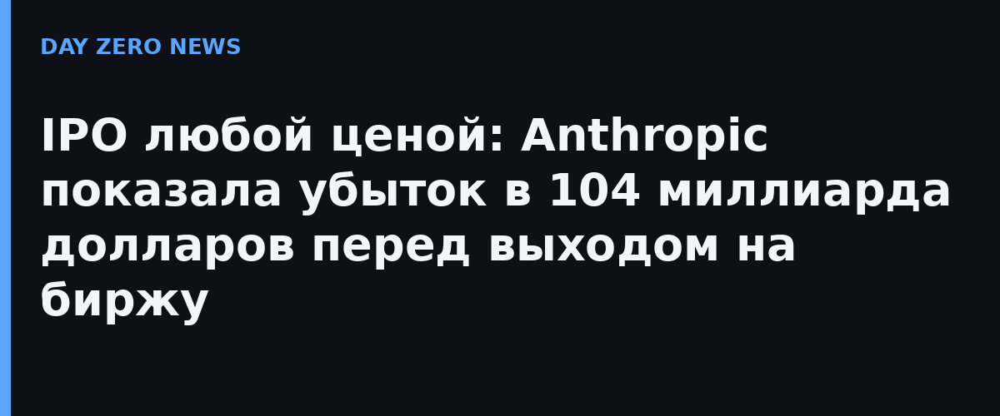

Из обновлённого регистрационного документа Anthropic, поданного в Комиссию по ценным бумагам и биржам США (SEC), следует: чистый убыток компании за девять месяцев 2026 года составил 104 млрд долларов. Для сравнения, годом ранее за тот же период «красные цифры» были в четыре раза меньше — 25 млрд. Одновременно выручка подскочила с 2,5 млрд до 33,2 млрд долларов — более чем в тринадцать раз.
В третьем квартале заявленный чистый убыток достиг 23,3 млрд долларов при выручке 17 млрд. Но сама компания подчёркивает: основная часть потерь — бухгалтерская корректировка (дооценка обязательств, связанных с акциями сотрудников), а операционный убыток квартала составил всего 567 млн долларов. За квартал разработчик Claude потратил около 5 млрд долларов только на вычислительные ресурсы.
Самая впечатляющая строка проспекта — обязательства на будущее: 895 млрд долларов вложений в дата-центры и инфраструктуру на ближайшие годы, из них почти 450 млрд должны быть освоены до конца 2030 года. Листинг Anthropic намерена провести уже через несколько недель (по данным СМИ — на Nasdaq под тикером ANT на неделе 16 ноября), обойдя OpenAI: та в этом году от размещения акций отказалась. Отдельного анонса в блоге компании нет — все цифры следуют из документа SEC, это первый случай, когда лаборатория ИИ раскрывает финансы так подробно.
Проспект — самый откровенный документ всей индустрии генеративного ИИ: он показывает реальный размах «подгораний» денег и то, во что обходится гонка за модели. Инвесторам предложат поверить, что выручка, растущая втрое быстрее убытков, однажды покроет вложения — и весь рынок теперь следит, согласится ли биржа.